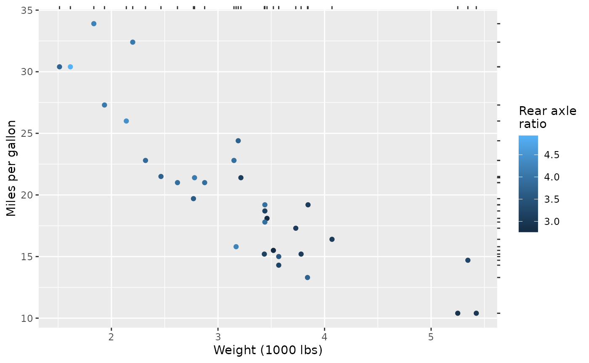
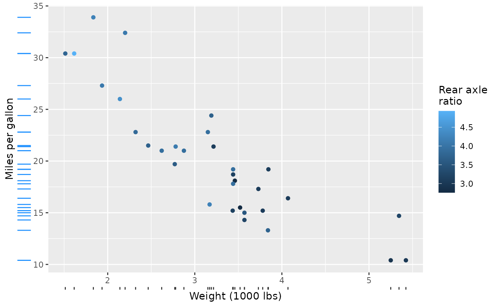
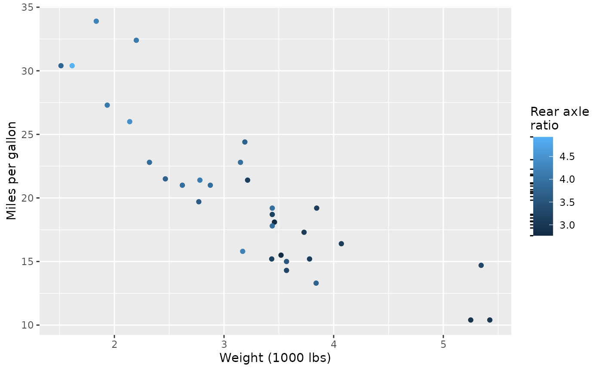

This article is intended to showcase a few strategies to use the building blocks that legendry provide to build more specialised guides.
Rugs
An easy way to wrap a rug guide is to combine
primitive_ticks() with a manual key. Axis guides cannot
lookup values from the plot data, so we would need to feed the rug data
manually.
guide_rug <- function(x, ...) {
primitive_ticks(key = key_manual(x), ...)
}
rug_wt <- guide_rug(mtcars$wt)
rug_mpg <- guide_rug(mtcars$mpg)The simplest way to use the guide would be as secondary axis.
base <- ggplot(mtcars, aes(wt, mpg, colour = drat)) +
geom_point() +
labs(
x = "Weight (1000 lbs)",
y = "Miles per gallon",
colour = "Rear axle\nratio"
)
base + guides(x.sec = rug_wt, y.sec = rug_mpg)
The guide can also easily stacked with typical axis guides. To style the ticks drawn by the rug differently than the regular axis ticks, you can give the rug guide a local theme.
long_ticks <- theme_guide(
ticks.length = unit(0.5, "cm"),
ticks = element_line(colour = "dodgerblue")
)
base + guides(
x = compose_stack("axis", rug_wt),
y = compose_stack("axis", guide_rug(mtcars$mpg, theme = long_ticks))
)
For using a rug at colour bars, you can feed a rug to the
guide_colbar(second_guide) argument. Note that colour-bar
guides by default have inward facing, white ticks, so you might like to
style them to look more like regular ticks.
rug_drat <- guide_rug(
x = mtcars$drat,
theme = theme_guide(
ticks.length = unit(2.75, "pt"),
ticks = element_line(colour = "black", linewidth = 0.5)
)
)
base + guides(colour = guide_colbar(second_guide = rug_drat))